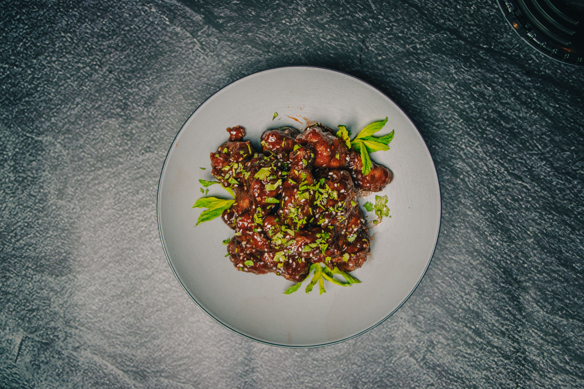

Home
General Tso's Chicken

Photo by Dextar StudioTM
Description
Looking for a delicious dish of Asian cuisine? General Tso's chicken has you covered!
Ingredients
Chicken
- 4 cups vegetable oil
- 1 large egg
- 1 1⁄2 lbs chicken thighs (skinless and boneless), cut into 1 1⁄2-inch pieces
- 1 tsp salt
- 1 tsp white sugar
- 1 pinch white pepper
- 1 cup corn starch
Sauce
- 2 tbsp vegetable oil
- 3 tbsp chopped green onion
- 1 clove garlic
- 6 dried whole red chilies
- 1 strip orange zest
- 1 1⁄2 cup white sugar
- 1⁄4 cup soy sauce
- 3 tbsp chicken broth
- 2 tbsp peanut oil
- 1 tbsp rice vinegar
- 2 tsp sesame oil
- 1⁄4 tsp ground ginger
- 2 tsp corn starch
- 1⁄4 cup water
Directions
- Heat vegetable oil in a deep fryer or large saucepan to 375°F (190°C)
- Whisk egg in large mixing bowl. Add chicken, salt, sugar, and pepper; mix well. Mix in corn starch, a little bit at a time, until chicken is well coated.
- Working in batches, carefully drop one piece of chicken at a time into the hot oil. Fry until chicken turns golden brown and begins to float, about 3 minutes. Remove chicken to a plate and allow to cool as you fry the next batch.
- Once all the chicken has been fried, refry the chicken, starting with the batch that was cooked first. Fry each batch until chicken turns deep golden brown, about 2 minutes more. Drain on a paper towel-lined plate.
- To make the sauce: Heat vegetable oil in a wok or large skillet over high heat. Stir in green onion, garlic, whole chiles, and orange zest. Cook and stir until garlic turns golden and chiles brighten, 1 to 2 minutes.
- Add sugar, soy sauce, chicken broth, peanut oil, rice vinegar, sesame oil, and ginger; bring to a boil and cook for 3 minutes. Whisk 2 teaspoons of corn starch in water until dissolved. Stir into the boiling sauce. Return to a boil and cook until the sauce thickens and is no longer cloudy from the corn starch, about 1 minute.
- Stir chicken into the boiling sauce. Reduce heat to low and cook until chicken is heated through and has absorbed some of the sauce, about 3 minutes.
Recipe courtesy of ChefDaddy on AllRecipes